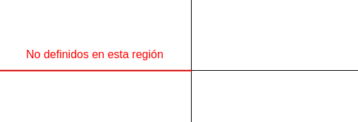

Plano Complejo
• Cambio de coordenadas cartesianas a polares:
$$ a + bi \rightarrow \begin{cases} \rho = \sqrt{a^2 + b^2} \\ \theta = \arctan(b/a) \end{cases}$$
• Cambio inverso:
$$ \rho \cdot e^{i\theta} \rightarrow \begin{cases} a = \rho \cos(\theta) \\ b = \rho \sin(\theta) \end{cases}$$
• Argumentos de un complejo
$$ \arg(z) = \{ \theta + 2 k \pi, k \in \Z \}$$
donde $\theta$ está definido como antes
• Argumento principal
$$ \text{Arg}(z) = \arg(z) \cap (-\pi, \pi)$$
donde $\theta$ está definido como antes
• Logaritmos de un complejo
$$ \log(z) = \ln(|z|) + i \arg(z)$$
donde $\arg(z)$ denota todos los argumentos posibles
• Logaritmo principal
$$ \text{Log}(z) = \ln(|z|) + i \text{Arg}(z)$$
Nota: ni el argumento principal ni el logaritmo principal están definidos en la siguiente región:

Funciones de variable compleja
$$ f(z) = f(x + iy) = u(x, y) + iv(x, y)$$
• Condiciones de Cauchy-Riemann:
$$ \begin{cases} u_x(x, y) = v_y(x, y) \\ u_y(x, y) = -v_x(x, y) \end{cases}$$
• f es derivable en $z_0$ si:
$$ \cdot \text{ Satisface Cauchy-Riemann en }z_0 $$
$$ \cdot \text{ } u_x, u_y, v_x, v_y \text{ son continuas en }z_0 $$
• f es analítica en $z_0$ si existe un entorno alrededor de $z_0$ en el que f es derivable en todos los puntos.
• Una función $h: \R^2 \rightarrow \R$ es armónica si:
$$ \nabla{h}^2 = 0$$
• Teorema: Si f es analítica en $z_0$, entonces $u$ y $v$ son armónicas en $z_0$.
• Teorema: Si $A$ es simplemente conexo, y $u$ es una función armónica, existe $v$ (armónica conjugada) tal que $f=u+iv$ es analítica en $A$
• Cálculo práctico de la armónica conjugada:
• Resolvemos $v_y = u_x$ integrando respecto a $y$, de donde $v$ queda definida salvo una función de $x$.
• Resolvemos $v_x = -u_y$ integrando respecto a $x$, y aplicamos condiciones iniciales si nos dan.